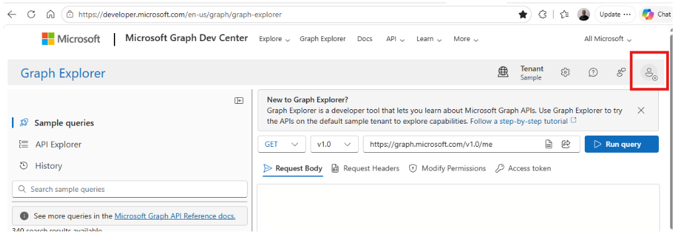
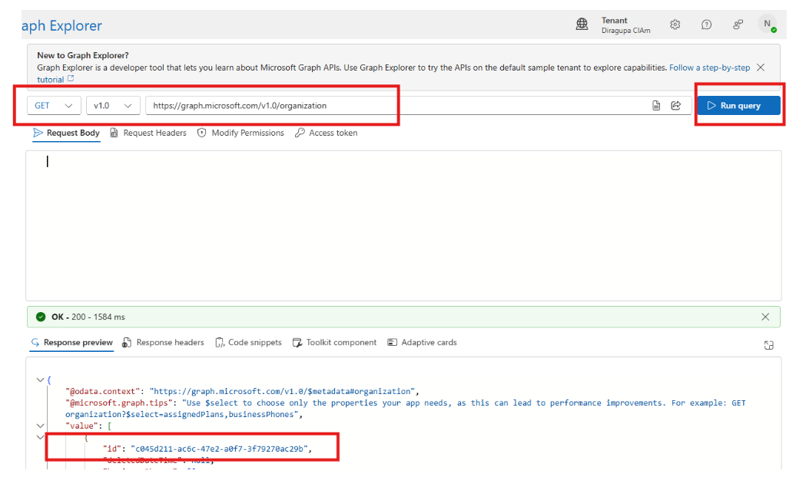
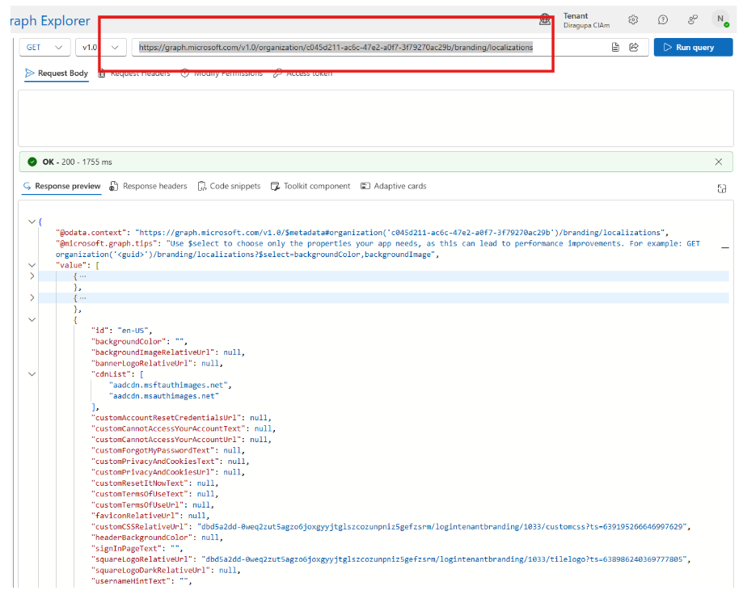
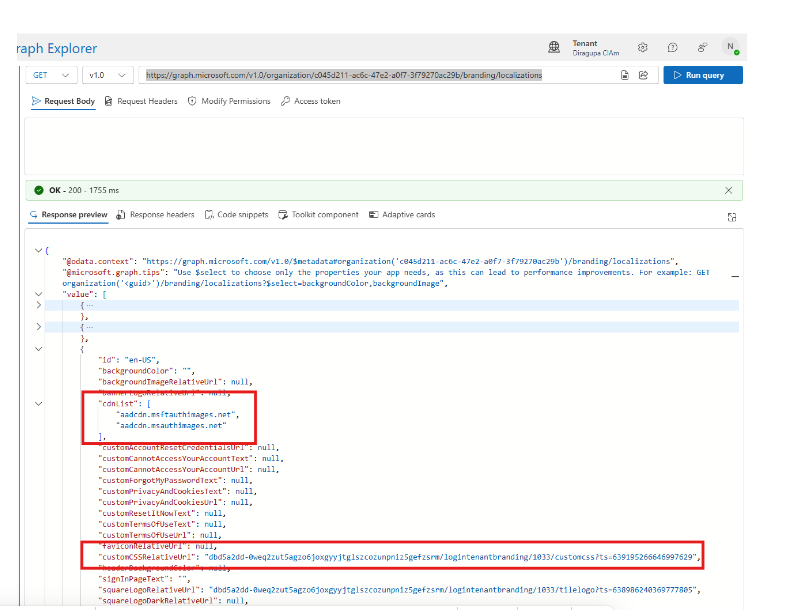

Follow these steps to find the styling web address (the customcss link) that a company configured on its Microsoft sign-in page. Once you have it, check it with the Sign-in Page Branding Checker.
Use the Sign in button in the top-right corner and sign in with your admin account.

Send a GET request to the organization resource, then copy the id value from the response — that is your Tenant ID.

id in the response is the Tenant ID.Send a GET request to the branding localizations resource (replace <tenantId> with the ID from step 3). The response has a value array — each item is a locale you configured.

value array holds one entry per configured locale.
cdnList and customCSSRelativeUrl.For every locale that has custom CSS, the customCSSRelativeUrl property has a value (it is null when there is no custom CSS). Combine it with any value from the cdnList array to form the URL:
Example from the sample tenant:
Repeat step 5 for each locale that has a custom CSS configured.